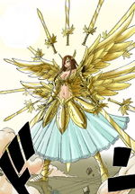
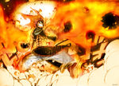
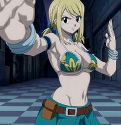
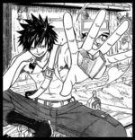

Esta es una recopilación de personajes de Fairy Tail clasificados por gremios en su mayoría, el resto va a los otros.
| Rango |
Nombre con una imagen |
Magia |
Gusta |
No gusta
|
| III y VI Maestro |
Makarov Dreyar |
Modificar cualquier parte de su cuerpo a lo Titán, invocar fuego, Fairy Law, Amaterasu, magia de luz y telepatía |
El vino y las mujeres |
Que ataquen a los miembros de su gremio
|
| (V Maestro) Mago de clase S |
Gildarts Clive |
Crash (Destrucción de todo lo que toca) y magia de desmontaje |
Las mujeres y el vino |
Que toquen (o que toqueteen) a su hija
|
| Mago de clase S |
Laxus Dreyar |
Dragon Slayer de Rayo, magia del Rayo, Fairy Law, proyección del pensamiento y magia de vínculo orgánico |
El aceite de batería y los enchufes |
Que le toquen los huevos
|
| Maga de clase S (aunque yo la pondría como maestra) |
Erza Scarlet  |
Re-equipar, telekinesis, espadas mágicas, magia de fuego, magia de rayo y magia de agua |
Enfadarse, ser una mandona, la tarta de fresa y Jellal |
Que le lleven la contraria e ir por ahí sin una armadura (Se sentiría desnuda)
|
| Maga de clase S |
Mirajane Strauss |
Transformación, Take Over, magia de sueño, levantar el ánimo a los que la ven y con el Satan Soul tiene: magia oscura, de rayo y de agua |
El fetichismo |
Que toquen a su hermano o a su hermana
|
| Mago destacado |
Natsu Dragneel |
Dragon Slayer de fuego, Dragon Slayer de rayo y transformación |
El fuego y el allanamiento de morada |
Los transportes
|
| Maga destacada |
Lucy Heartfilia |
Magia de espíritus celestiales, magia de agua y Star Dress |
Escribir guarradas, leer manga yaoi, ponerse ropa picante, el cosplay y los animales |
El rechazo y que allanen su morada
|
| Mago destacado |
Gray Fullbuster |
Ice make y Devil Slayer de Hielo |
El hielo, el exhibicionismo y el body painting |
Juvia y Natsu
|
| Mago destacado |
Gajeel Redfox |
Dragon Slayer de Hierro, Dragon Slayer de las Sombras y Dragon Slayer de Acero |
El hierro, el acero, donde haga sombra (sevillano seguro) y reírse raro |
Natsu, transportes y el óxido de hierro
|
| Maga destacada |
Juvia Loxar |
Magia de agua |
Gray y acosar a Gray |
Fangirls de Gray (Como Lucy)
|
| Maga destacada |
Cana Alberona |
Magia de cartas, adivinación, astrología y Fairy Glitter |
El alcohol etílico y los hombres con un buen rabo |
Que los insolentes como su padre (Gildarts) le toquen los ovarios
|
| Mago destacado |
Elfman Strauss |
Take Over |
Los hombres y Evergreen |
Que lo llamen cobarde y que le toquen (o toqueteen) un pelo a sus hermanas
|
| Maga destacada |
Lisanna Strauss |
Take Over |
Natsu y hacerse pasar por cadáver |
Que Natsu no le haga caso
|
| Maga destacada |
Wendy DC Cómics Marvell |
Dragon Slayer del Cielo |
El Caviar y las ilusiones proyectadas por un fantasma |
Tenerlas pequeñas y las ciruelas agrias
|
| Mago destacado |
Loke |
Es un espíritu estelar, regulus, tornado y transformación |
Las mujeres |
Las magas de espíritus estelares (temporal) y los hombres
|
| Maga destacada |
Levi McGarden |
Escritura sólida |
Leer y Gajeel |
Que la gente hable de tetas
|
| Mago destacado |
Freed Justine |
Escritura oscura, magia oscura y runas mágicas |
Cocinar como el culo y Laxus |
Que no sigan sus normas y las mujeres con poca ropa
|
| Maga destacada |
Evergreen |
Ojos mágicos y magia fairy |
Elfman y echarle m*@&&a a Erza |
Erza y los cretinos
|
| Mago destacado |
Bickslow |
Seith Magic: Posesión humana, ojo mágico y muñecas |
Reírse de todo y de todos |
Que lo miren a los ojos
|
| Exceed |
Happy |
Aera, Ushi no Koku Mairi (Vudú) y transformación |
El pescado, molestar y Charle |
Los perros
|
| Exceed |
Charle |
Aera, Precognición y transformación |
Hacerse la ruda y criticar |
Que la dejen en evidencia
|
| Exceed |
Pantherlily |
Aera |
Los kiwis |
Los truenos
|
| (IV Maestro) Mago menor |
Macao Conbolt |
Llamarada púrupura |
Ser un padrazo |
Tener que devolver préstamos de todo tipo
|
| Mago menor |
Reedus Jonah |
Picto magia |
Sus dibujos mal dibujados (los bien dibujados ni los mira) |
Los loros y las zanahorias
|
| Mago menor |
Nab Lázaro |
Posesión animal |
Mirar como un gilipollas los trabajos del tablón para después no coger ninguno |
No hacer lo anteriormente mencionado
|
| Mago menor |
Alzack Cornell |
Armas mágicas |
Bisca |
Todo lo picante
|
| Maga menor |
Bisca Cornell (Moulin antes de casarse)(Moulin Rouge antes de llegar a Fairy Tail) |
Re-equipar (El Arsenal) |
Alzack |
Todo lo dulce
|
| Mago menor |
Vijeeter Ecor |
Bailarín |
Bailar, no te jode |
El Natto (Un derivado de la soja)
|
| Mago menor |
Wakaba Mine |
Humo mágico |
¡Fumar, la cerveza y las mujeres! |
Su señora (ahora su ex-señora)
|
| Mago menor |
Jet |
Alta velocidad |
Sonic de Sega, Mercurio de Marvel, Flash de DC cómics y Levi |
Los camarones y el sexo, porque es eyaculador precoz
|
| Mago menor |
Droy |
Magia de plantas |
La jardinería, la comida grasienta y Levi |
El tipo de Decogarden porque es un chapucero y los nutricionistas
|
| Mago menor |
Max Alors |
Tormenta de arena |
Ir de bares |
La soledad
|
| Maga menor |
Laki Olietta |
Wood make |
La esclavitud, la tortura y la ebanistería |
Ir con poca ropa
|
| Maga menor |
Kinana |
Take Over |
Decir -kina al final de las frases, aunque después de que se le quitara ahora solo piensa en Cobra |
Las serpientes
|
| Mago menor |
Romeo Conbolt |
Magia de fuego, fuego arco iris y llama púrpura |
Imitar a Natsu |
La saga Tenroujima
|
| Maga menor |
Porlyusica |
Magia curativa |
La naturaleza |
Los humanos
|
| Mago menor |
Mest Gryder/Doranbolt |
Control de memoria y teletransportación |
Perder en todas las peleas en las que entra |
Tártaros
|
| Hija de magos menores |
Asuka Cornell |
Ya aprenderá a hacer algo |
Es una niña pequeña, le gustará tocar los huevos y ensuciarlo todo |
Pues no conseguir lo que quiere
|
| Abandonó (Anteriormente mago clase-S) |
Mystogan (Jellal de Edolas) |
Antes usaba ilusiones varios bastones, ahora que es un rey, no necesita magia alguna |
Ser rey de Edolas |
Su padre
|
| Abandonó |
Goldmine |
No sé, no lo dice ni en el manga |
Pues Quatro Cerberus |
Que ahora el gremio sea Quatro Puppy
|
| Abandonó |
Bob |
Tampoco lo dicen |
Los hombres |
Que le toquen los huevos
|
| Abandonó |
Shito Yajima |
Aplanamiento y telepatía |
Cocinar y hacer comentarios impertinentes |
Que no le devuelvan un favor
|
| Abandonó |
Warrod Sequen |
Magia verde |
Los seres vivos y hacer florecer desiertos en los que ha numerosos seres vivos adaptados a ese hábitat |
No sé... El fuego a lo mejor
|
| Abandonó |
Mickey Chickentiger |
Pájaro mágico |
Montar jaleo |
No sé mira en el manga a ver
|
| Abandonó |
Tono Rabbits |
Magia de luz |
Los plátanos, los camarones y la historia |
Destacar
|
| Abandonó |
Mikuni Shin |
Magia de tierra |
Los tambores |
Los ratones
|
| Abandonó |
Chico C. Hammit |
Leyenda de ciudad |
Novelas de terror |
Verduras en adobo
|
| Abandonó |
Wan ChanJi |
Perro de hierro |
La tranquilidad |
Hablar
|
| Abandonó |
Joey Fullbun |
Hablar músculo |
Sus músculos |
Wan ChanJi
|
| Abandonó |
Krov |
Desconocida, no lo dicen |
Hacer bulto |
Usar su magia
|
| Excomulgado |
IvAn Dreyar |
Magia Shikigami y magia ilusionista |
Hacer trampas |
Fairy Tail
|
| Murió |
Mavis Vermillion (I maestra) |
Fairy Law, Fairy Glitter, Fairy Sphere y magia ilusionista |
Fairy Tail, Zeref |
Ancselam
|
| Murió |
Yuriy Dreyar |
Magia del rayo |
Él mismo |
Perder
|
| Murió |
Rob |
Magia de fuego |
Fairy Tail |
La torre del Paraíso
|
| Abandonó y murió |
Pretch Gaebolg/Maestro Hades/Maestro Purehito (II maestro) |
Re-equipar, cadenas, amaterasu, Grimoire Law, ojo mágico |
La magia primigenia |
No sé, la insubordinación (?)
|
| Rango |
Nombre con una imagen |
Magia |
Gusta |
No gusta
|
| Maestro |
Bob |
Phasing |
Hombres y travestirse |
El maltrato
|
| Mago de clase S |
Ichiya Vandalay Kotobuki |
Perfume mágico |
Las mujeres con buen parfum, él mismo |
Las mujeres con mal parfum
|
| Mago |
Hibiki Lates |
Archivo |
Jenny Realight y pasarse la vida sin sentar la cabeza |
Avergonzarse de su comportamiento de acosador
|
| Mago |
Eve Tearm |
Magia de nieve |
Pues las mujeres |
Perder las peleas importantes
|
| Mago |
Ren Akatsuki |
Magia de aire |
Sherry Blendi y el tsundere |
La piel blanca
|
| Maga |
Jenny Realight |
Take Over (Machina Soul) y transformación |
Apostar fuerte e Hibiki |
Posar desnuda y Mirajane Strauss
|
| Exceed |
Nichiya |
Aera |
Las mujeres con buen parfum, Ichiya y él mismo |
Las mujeres con mal parfum
|
| Abandonó |
Laxus Dreyar |
Magia de rayo y Dragon Slayer del rayo falso |
Mira arriba |
Que le toquen las pelotas
|
| Abandonó |
Freed Justine |
Escritura oscura, magia oscura y runas mágicas |
Laxus y lo que haya puesto arriba |
¡Que mires arriba!
|
| Abandonó |
Evergreen |
Ojos mágicos, magia fairy |
No lo voy a repetir |
Mira, me estoy enfadando, mira
|
| Abandonó |
Bickslow |
Seith Magic: Posesión humana, ojo mágico y muñecas |
El que ponga las magias es cognoscible a la discusión |
¡Significa que las pongo porque me da la gana
|
| Muerta |
Karen Lilica |
Espíritus estelares |
Putear a Aries mientras Loke mira |
La insubordinación (como el de los lectores conmigo)
|
 De: La Frikipedia, la enciclopedia extremadamente seria.
De: La Frikipedia, la enciclopedia extremadamente seria.